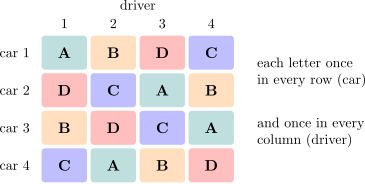

6.1 The Latin square design
Definition 6.1.1. A Latin square of order \(p\) is a \(p \times p\) array of \(p\) symbols, usually the letters \(A, B, C, \dots \), in which each symbol appears exactly once in each row and exactly once in each column.
In a Latin square design the rows and columns are the levels of two nuisance factors, each with \(p\) levels, and the letters are \(p\) treatments. Each treatment is then applied once at every level of each nuisance factor, so treatment comparisons are free of both. Typical uses are field trials with fertility gradients in two directions, and industrial experiments blocked on, say, batches of material and operators.
To randomise, one starts from any Latin square of the right order, permutes its rows at random, then its columns, and finally assigns the treatments to the letters at random. For \(p = 3\) this can produce every Latin square of the order. For \(p \ge 4\) it cannot, and Fisher and Yates recommended first choosing the starting square at random from a table of the standard squares, those whose first row and column are in alphabetical order.
Example 6.1.2. Four fuel additives \(A\), \(B\), \(C\), \(D\) were compared for their effect on fuel economy (km per litre). Cars differ and so do drivers, so four cars and four drivers were used in a Latin square, each driver driving each car once and each additive being used once by each driver and once in each car:
| car | driver \(1\) | driver \(2\) | driver \(3\) | driver \(4\) | total |
| \(1\) | \(A\ 19.5\) | \(B\ 23.6\) | \(D\ 23.6\) | \(C\ 23.3\) | \(90.0\) |
| \(2\) | \(D\ 17.9\) | \(C\ 22.3\) | \(A\ 20.8\) | \(B\ 20.0\) | \(81.0\) |
| \(3\) | \(B\ 22.3\) | \(D\ 22.2\) | \(C\ 27.2\) | \(A\ 21.5\) | \(93.2\) |
| \(4\) | \(C\ 19.8\) | \(A\ 18.4\) | \(B\ 20.8\) | \(D\ 18.2\) | \(77.2\) |
| total | \(79.5\) | \(86.5\) | \(92.4\) | \(83.0\) | \(341.4\) |
The additive totals are \(A\): \(80.2\), \(B\): \(86.7\), \(C\): \(92.6\), \(D\): \(81.9\), and \(\sum y^2 = 7374.10\).

Model and analysis
Let \(y_{ijk}\) be the observation in row \(i\) and column \(k\), which received treatment \(j\); only \(p^2\) of the \(p^3\) combinations of \((i, j, k)\) occur. The model is \[ y_{ijk} = \mu + \alpha _i + \tau _j + \beta _k + \varepsilon _{ijk} , \] with row effects \(\alpha _i\), treatment effects \(\tau _j\) and column effects \(\beta _k\), each summing to zero, and independent \(N(0, \sigma ^2)\) errors. Like the RCBD it is additive: no interactions between rows, columns and treatments are allowed for.
Theorem 6.1.3. In a Latin square design, \[ SST = SS_{\mathrm {Rows}} + SS_{\mathrm {Columns}} + SS_{\mathrm {Treatments}} + SSE , \] where, with totals \(y_{i\cdot \cdot }\), \(y_{\cdot \cdot k}\), \(y_{\cdot j\cdot }\) and \(y_{\cdot \cdot \cdot }\), \[ SS_{\mathrm {Rows}} = \frac 1p\sum _iy_{i\cdot \cdot }^2 - \frac {y_{\cdot \cdot \cdot }^2}{p^2} , \] and similarly for columns and treatments, and \(SSE\) is found by subtraction. The degrees of freedom are \(p - 1\) for each of rows, columns and treatments, and \((p - 1)(p - 2)\) for error. The expected mean squares are \(E(MSE) = \sigma ^2\) and \(E(MS_{\mathrm {Treatments}}) = \sigma ^2 + p\sum \tau _j^2/(p - 1)\), and under normality \(F_0 = MS_{\mathrm {Treatments}}/MSE \sim F_{p-1,\,(p-1)(p-2)}\) when all \(\tau _j = 0\).
Proof. Let \(H_R\), \(H_C\), \(H_T\) and \(H_0\) be the projections that replace each observation by its row mean, column mean, treatment mean and the grand mean. Each treatment occurs exactly once in each row, so averaging over a row and then over a treatment gives the grand mean: \(H_RH_T = H_0\). Likewise \(H_CH_T = H_0\), and since each row meets each column once, \(H_RH_C = H_0\). So \(H_R - H_0\), \(H_C - H_0\) and \(H_T - H_0\) are mutually orthogonal projections of rank \(p - 1\), and \(I - H_R - H_C - H_T + 2H_0\) is the projection onto the remaining space, of rank \(p^2 - 3(p - 1) - 1 = (p - 1)(p - 2)\). The argument of Theorem 5.2.3 then applies word for word. □
Example 6.1.4. For the fuel data, the correction factor is \(341.4^2/16 = 7284.6225\), so \(SST = 7374.10 - 7284.6225 = 89.4775\), and \begin {align*} SS_{\mathrm {Cars}} &= \tfrac 14(90.0^2 + 81.0^2 + 93.2^2 + 77.2^2) - 7284.6225 = 42.1475 , \\ SS_{\mathrm {Drivers}} &= \tfrac 14(79.5^2 + 86.5^2 + 92.4^2 + 83.0^2) - 7284.6225 = 22.6925 , \\ SS_{\mathrm {Additives}} &= \tfrac 14(80.2^2 + 86.7^2 + 92.6^2 + 81.9^2) - 7284.6225 = 23.2025 , \end {align*}
leaving \(SSE = 1.4350\) on \(6\) degrees of freedom.
| source | SS | df | MS | \(F_0\) |
| additives | \(23.2025\) | \(3\) | \(7.7342\) | \(32.34\) |
| cars | \(42.1475\) | \(3\) | \(14.0492\) | |
| drivers | \(22.6925\) | \(3\) | \(7.5642\) | |
| error | \(1.4350\) | \(6\) | \(0.2392\) | |
| total | \(89.4775\) | \(15\) |
With \(F_{0.05,3,6} = 4.76\) the additives differ (\(p = 0.0004\)). The additive means are \(20.05\), \(21.68\), \(23.15\) and \(20.48\), and Tukey’s \(HSD = q_{0.05}(4, 6)\sqrt {0.2392/4} = 4.896(0.2445) = 1.20\). So \(C\) is better than all the others, \(B\) is better than \(A\) (by \(1.63\)) and only just better than \(D\) (by \(1.20\), right at the borderline), and \(A\) and \(D\) do not differ. Together, cars and drivers account for \(65\) of the \(89\) units of total variation; an unblocked experiment would have buried the additives in it.
Relative efficiency
Had only the rows been used as blocks, the column variation would have entered the error. By the argument of Proposition 5.4.1, the error variance of that RCBD is estimated by \([MS_{\mathrm {Columns}} + (p - 1)MSE]/p\): within a row, the units differ by the column effects as well as the error, and \(E(MS_{\mathrm {Columns}} - MSE)/p = \sum \beta _k^2/(p - 1)\). So the efficiency of the Latin square relative to an RCBD blocked on rows only is \[ RE = \frac {MS_{\mathrm {Columns}} + (p - 1)MSE}{p\,MSE} , \] and similarly with rows and columns exchanged. For the fuel data, blocking on drivers as well as cars gives \(RE = (7.5642 + 3(0.2392))/(4 \times 0.2392) = 8.66\), and blocking on cars as well as drivers gives \((14.0492 + 0.7175)/0.9567 = 15.43\).
A missing value
As in the RCBD, a single missing value can be estimated by minimising \(SSE\) (Problem 6.4.1): \[ \hat x = \frac {p\bigl (R' + C' + T'\bigr ) - 2G'}{(p - 1)(p - 2)} , \] where \(R'\), \(C'\), \(T'\) and \(G'\) are the totals of the row, column and treatment containing the missing cell, and the grand total, of the observations present. One degree of freedom is subtracted from the error.
Replicated squares and crossover designs
A single Latin square of order \(3\) or \(4\) has only \(2\) or \(6\) error degrees of freedom. More precision is obtained by using \(n\) squares. If each square has its own rows and its own columns (new cars and new drivers in each), the analysis has, besides treatments (\(p - 1\)), squares (\(n - 1\)), rows within squares (\(n(p - 1)\)) and columns within squares (\(n(p - 1)\)), leaving \((p - 1)\bigl (n(p - 1) - 1\bigr )\) for error. If rows or columns are shared between the squares, their degrees of freedom are fewer and the error’s correspondingly more.
When the columns are time periods and the rows are subjects who receive every treatment in turn, the Latin square is a crossover design, common in clinical trials. It removes subject-to-subject variation from the comparisons, at the risk that a treatment’s effect carries over into the next period. Carryover effects are not part of the Latin square model, and designs that allow for them, balanced so that each treatment follows each other treatment equally often, are needed when they are plausible.
Questions on this section
Stuck on something here? Ask below and it stays attached to this topic.